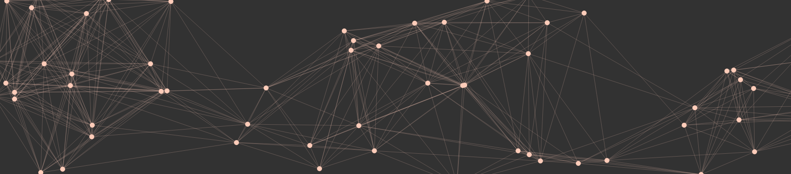
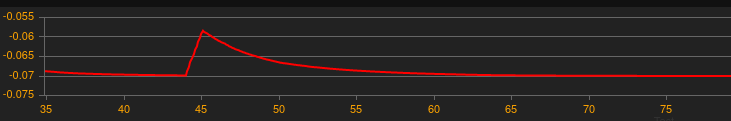
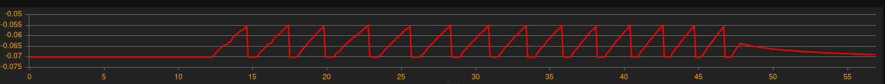
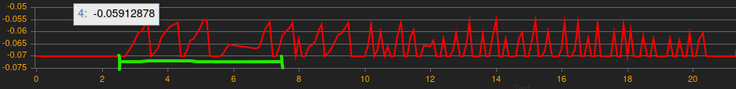

Um die Grundstruktur für das neuronale Netz zu erstellen und um dies später auch zu animieren, nutzte ich die wunderbare Bibliothek p5.js.
Diese ist sehr schnell und einfach zu lernen. Im Grunde gibt es zwei Hauptfunktionen, eine setup() - Funktion die die "canvas"
initialisiert und die draw() - Methode die einmal pro Frame aufgerufen wird. Dies wird insofern wichig als dass ich später als
zeitliche Einheit die Framerate (Frames pro Sekunde) nutze um die Änderungsrate der Membranspannung eines Neurons zu berechnen.
Um die Neuronen zu initialisieren schreiben wir eine einfache Funktion welche zum Start der Anwendung ausgeführt wird:
function setupNeurons(){
for(let i=1;i<=NEURON_COUNT;i++){
let neuron = new Neuron();
neuron.x = getRandomNumberBetween(0, width);
neuron.y = getRandomNumberBetween(0, height);
neuron.c = color(255, 204, 185);
neuralNet.push(neuron);
}
}
Der Array neuralNet hält hierbei unsere einzelnen Neuronen. Das Neuron-Objekt ist bis zu diesem Zeitpunkt noch sehr leer. Etwas anspruchsvoller ist die Funktion um die Synapsen zu erstellen. Dabei nutzen wir den Wert SYNAPTIC_PROB (synaptic-probability) um die Wahrscheinlichkeit für eine Synapse anzupassen.
function setupSynapes(){
neuralNet.forEach((neuron)=>{
neuralNet.forEach((dNeuron)=>{
// return if connection was already made
if(dNeuron.synapses.includes(neuron) && !BACKWARDS_CONNECTIONS){return;}
// return if neuron inspects itself haha
if(neuron == dNeuron){return;}
// calculate distance from each neuron to each other neuron
let xDist = Math.abs(neuron.x - dNeuron.x);
let yDist = Math.abs(neuron.y - dNeuron.y);
// absolute distance between the two neurons
let absDist = Math.sqrt(xDist**2 + yDist**2);
// We dont want the chance for connection to be 100% even for close by neurons
let probScalar = 1 + Math.random();
if(absDist*0.001 * probScalar <= SYNAPTIC_PROB){
neuron.synapses.push(dNeuron);
neuron.synapticWeights.push(INITIAL_WEIGHT);
}
});
});
}
Resultat:
In dieser Simulation wurde sich an das Leaky-Integrate-and-Fire-Model angelehnt. Hierbei wird die Änderungsrate des Membranpotentials eines Neurons über mehrere Stromstärken I über die Zeit (also I(t)) betrachtet.
Die "leaky"-Komponente, welche Ionendiffusion/-transport aus dem Neuron simuliert wird hier einfacher als beim eigentlichen LIF-Model umgesetzt:
let leaky_current = - tau * (neuron.currentMembranePotential - neuron.RESTING_POTENTIAL);
neuron.currentMembranePotential += leaky_current;
Hiermit versichern wir uns eines durch eine e-Funktion beschreibbaren Abfalls der Spannung an der Membran. Stimulieren wir nun das Neuron können wir in der Abbildung sehen wie sich die Spannung wieder dem Ruhepotential nähert.
Das Ruhepotential liegt hier bei für Neuronen typischen -70mV oder -0.07V. Führen wir als nächstes einen Threshold ein der für ein Aktionspotential sowie ein postsynaptisches Signal sorgt. Den Threshold legen wir dabei auf -0.055 Volt. Übersteigt der Spannungswert der Membran den Threshold so leiten wir ein Signal an durch Synapsen verbundene Neuronen weiter. Desweiteren setzen wir den Spannungswert wieder auf das Ruhepotential und befinden uns anschließend in einer Erhohlungsphase in der Das Neuron nicht stimuliert werden kann. Für die Übersichtlichkeit der Simulation wurde diese "Recreational time" auf ungewöhnliche 100ms gelegt.
// gets called when neuronal threshold is crossed
function onThresholdCrossed(neuron){
// schedule impulse for connected neurons
neuron.synapses.forEach((pNeuron, index) => {
let weight = neuron.synapticWeights[index];
pNeuron.impulses.push({t: Date.now(), w: weight});
});
// set recreational time
neuron.recreationalTimestamp = Date.now();
// reset to resting potential
neuron.currentMembranePotential = neuron.RESTING_POTENTIAL;
// draw blinking neuron
let cir = circle(neuron.x, neuron.y, neuron.diameter + 20);
}
Legen wir nun eine konstante Stromstärke von 80mA an unser ausgewähltes Neuron sieht das ganze grafisch wie folgt aus:
Wie man sieht sind die Kurven trotz konstanter Stromstärke nicht perfekt. Dies liegt an der Berechnung der Stromstärke. Hierbei berechnen wir die Framerate mit ein um eine akkurate Änderungsrate der Spannung zu erhalten:
let relCurrent = CONST_INPUT_CURRENT / (Math.floor(fps));
Als nächstes wollen wir die Signale auch weiterleiten. In unserer Simulation hat ein postsynaptisches Signal eine immer gleiche Stromstärke, welche durch ein synaptisches Gewicht verstärkt oder geschwächt wird. Ein postSynaptisches Signal dauert hier genau 100ms.
let preSynapticCurrent = 0;
// iterate through scheduled impulses
neuron.impulses.forEach((impuls)=> {
// if impulse time
if(Date.now() - impuls.t <= 100){
// U = I * R
// Delta U = synaptic-weight(impuls.w) * (I(t) * R)
preSynapticCurrent = impuls.w * ((POST_SYNAPTIC_IMPULSE * neuron.MEMBRANE_RESISTANCE) / Math.floor(fps));
// if impulse over
} else if(Date.now() - impuls.t <= 0){
neuron.impulses = arrayRemove(neuron.impulses, impuls);
}
});
Wie schon vorher rechnen wir hier auch immer die zeitliche Komponente fps (Frames per second) mit ein um eine akkurate Repräsentation unserer Stromstärke über die Zeit zu bekommen. Schon jetzt können wir sehen wie sich das Netz aufschaukeln kann und das Ausgangsneuron selbst nach Abbruch externer Stimulation weiterhin Signale empfängt. Grün markiert hier die Dauer des externen Stimulus. Der weitere Verlauf ist durch eingehende Impulse verbundener Neuronen zu erklären. Das Spikes hier nicht bei perfektem Threshold dargestellt werden hängt damit zusammen dass die Aktualisierung des Graphen nicht in jedem Frame stattfindet, sondern nur in etwa alle 10ms. Somit wird immer ein bisschen Information fehlen.
Als nächstes schauen wir uns an wie wir Hebbs Rule mit einbinden können in unsere Simulation. Zunächst initialisieren wir alle Gewichte des Netzwerks mit einem Startwert, beispielsweise 0,5. Zunächst implementieren wir den Gewichtsverfall. Synapsen die nicht aktiv sind verlieren ihre Wirksamkeit -> ihr Gewicht nimmt ab.
neuron.synapticWeights[index] += - ( WEIGHT_DECAY * neuron.synapticWeights[index] );
Somit haben wir ähnlich wie bei dem vorher implementierten Spannungsabfall eine exponentielle Abnahme des synaptischen Gewichts. Wie können wir nun die pre- bzw. postsynaptische Aktivität messen? In diesem Beispiel nehmen wir hierfür den normalisierten Wert des Membranpotentials beider Neuronen. Sind beide Neuronen stark aktiv, steigt das synaptische Gewicht. Andernfalls nähert er sich durch die vorhin beschriebene Verfallsfunktion gegen 0 an. Nun können wir noch die Lernrate einführen welche als Skalar der eben berechneten Aktivitäten dient. Somit können wir bestimmen wie schnell eine synaptische Verbindung stärker wird. Alles in allem sieht das dann so aus:
neuron.synapses.forEach((pNeuron, index) =>{
// presynaptic activity -> normalized value of presynaptic membranpotential
let preSynapticActivity = (neuron.currentMembranePotential - neuron.RESTING_POTENTIAL) / (neuron.threshold - neuron.RESTING_POTENTIAL)
// post synaptic activity -> normalized value of postsynaptic membranpotential
let postSynapticActivity = (pNeuron.currentMembranePotential - pNeuron.RESTING_POTENTIAL) / (pNeuron.threshold - pNeuron.RESTING_POTENTIAL);
let neuronalActivity = LEARNING_RATE * ((1 - neuron.synapticWeights[index]) * preSynapticActivity * postSynapticActivity);
neuron.synapticWeights[index] += neuronalActivity - (WEIGHT_DECAY * neuron.synapticWeights[index])
});